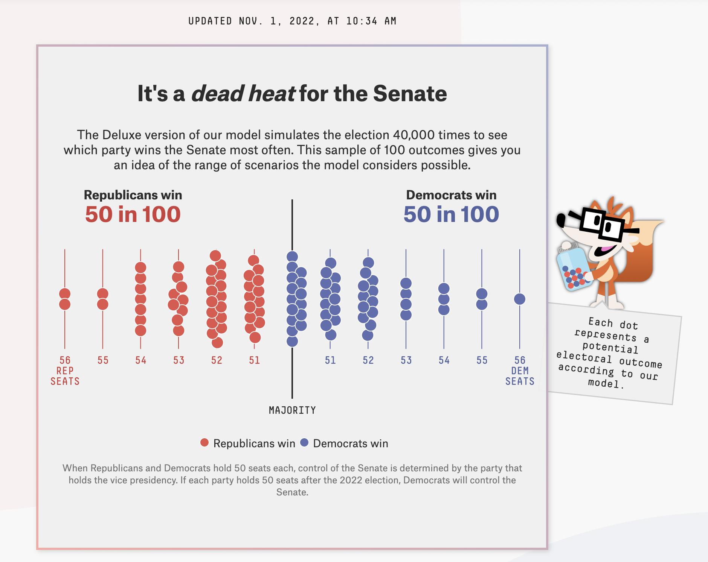

| term | estimate | std.error | statistic | p.value |
|---|---|---|---|---|
| (Intercept) | 4.738 | 0.219 | 21.667 | 0.000 |
| hightemp | 0.018 | 0.003 | 5.452 | 0.000 |
| seasonSpring | 0.026 | 0.094 | 0.283 | 0.778 |
| seasonSummer | -0.047 | 0.139 | -0.338 | 0.736 |
| cloudcover | -0.025 | 0.010 | -2.452 | 0.016 |
| precip | -0.294 | 0.123 | -2.397 | 0.019 |
| day_typeWeekend | 0.064 | 0.065 | 0.987 | 0.327 |
Logistic regression
Introduction
Prof. Maria Tackett
Oct 30, 2023
Announcements
HW 03 due Wed, Nov 1 at 11:59pm
See Ed Discussion for
- Code to reformat
Themevariable in HW 03 data set
- Code to reformat
Spring 2024 statistics courses
- STA 211: Mathematics of Regression
- Prereqs: MATH 216/218/221, STA 210
- STA 230 or STA 240: Probability
- Prereqs: MATH 22/112/122/202/212/219/222
- STA 310: Generalized Linear Models
- Prereqs: STA 210 and STA 230/240
- STA 313: Advanced Data Visualization
- Prereqs: STA 198 or STA 199 or STA 210
- STA 323: Statistical Computing
- Prereqs: STA 210 and STA 230/240
- STA 360: Bayesian Inference and Modern Statistical Methods
- Prereqs: STA 210 and STA 230/240 and MATH 202/212/219/222 and CS 101/102/201 and MATH 216/218/221, 211 (co-req)
Interpreting models with log-transformed variables
Interpret the intercept in terms of (1)
log(volume)and (2)volume.Interpret the coefficient of
hightempin terms of (1)log(volume)and (2)volume.
Logistic regression
Topics
Logistic regression for binary response variable
Relationship between odds and probabilities
Use logistic regression model to calculate predicted odds and probabilities
Computational setup
Predicting categorical outcomes
Types of outcome variables
Quantitative outcome variable:
- Sales price of a house in Duke Forest
- Model: Expected sales price given the number of bedrooms, lot size, etc.
Categorical outcome variable:
- Indicator of being high risk of getting coronary heart disease in the next 10 years
- Model: Probability an adult is high risk of heart disease in the next 10 years given their age, total cholesterol, etc.
Models for categorical outcomes
Logistic regression
2 Outcomes
1: Yes, 0: No
Multinomial logistic regression
3+ Outcomes
1: Democrat, 2: Republican, 3: Independent
2022 election forecasts
2020 NBA finals predictions

Do teenagers get 7+ hours of sleep?
Students in grades 9 - 12 surveyed about health risk behaviors including whether they usually get 7 or more hours of sleep.
Sleep7
1: yes
0: no
data(YouthRisk2009) #from Stat2Data package
sleep <- YouthRisk2009 |>
as_tibble() |>
filter(!is.na(Age), !is.na(Sleep7))
sleep |>
relocate(Age, Sleep7)# A tibble: 446 × 6
Age Sleep7 Sleep SmokeLife SmokeDaily MarijuaEver
<int> <int> <fct> <fct> <fct> <int>
1 16 1 8 hours Yes Yes 1
2 17 0 5 hours Yes Yes 1
3 18 0 5 hours Yes Yes 1
4 17 1 7 hours Yes No 1
5 15 0 4 or less hours No No 0
6 17 0 6 hours No No 0
7 17 1 7 hours No No 0
8 16 1 8 hours Yes No 0
9 16 1 8 hours No No 0
10 18 0 4 or less hours Yes Yes 1
# ℹ 436 more rowsPlot the data

Let’s fit a linear regression model
Outcome: \(Y\) = 1: yes, 0: no

Let’s use proportions
Outcome: Probability of getting 7+ hours of sleep

What happens if we zoom out?
Outcome: Probability of getting 7+ hours of sleep

🛑 This model produces predictions outside of 0 and 1.
Let’s try another model

✅ This model (called a logistic regression model) only produces predictions between 0 and 1.
The code
Different types of models
| Method | Outcome | Model |
|---|---|---|
| Linear regression | Quantitative | \(Y = \beta_0 + \beta_1~ X\) |
| Linear regression (transform Y) | Quantitative | \(\log(Y) = \beta_0 + \beta_1~ X\) |
| Logistic regression | Binary | \(\log\big(\frac{\pi}{1-\pi}\big) = \beta_0 + \beta_1 ~ X\) |
Linear vs. logistic regression
State whether a linear regression model or logistic regression model is more appropriate for each scenario.
Use age and education to predict if a randomly selected person will vote in the next election.
Use budget and run time (in minutes) to predict a movie’s total revenue.
Use age and sex to calculate the probability a randomly selected adult will visit Duke Health in the next year.
Odds and probabilities
Binary response variable
- \(Y = 1: \text{ yes}, 0: \text{ no}\)
- \(\pi\): probability that \(Y=1\), i.e., \(P(Y = 1)\)
- \(\frac{\pi}{1-\pi}\): odds that \(Y = 1\)
- \(\log\big(\frac{\pi}{1-\pi}\big)\): log odds
- Go from \(\pi\) to \(\log\big(\frac{\pi}{1-\pi}\big)\) using the logit transformation
Odds
Suppose there is a 70% chance it will rain tomorrow
- Probability it will rain is \(\mathbf{p = 0.7}\)
- Probability it won’t rain is \(\mathbf{1 - p = 0.3}\)
- Odds it will rain are 7 to 3, 7:3, \(\mathbf{\frac{0.7}{0.3} \approx 2.33}\)
Are teenagers getting enough sleep?
# A tibble: 2 × 3
Sleep7 n p
<int> <int> <dbl>
1 0 150 0.336
2 1 296 0.664\(P(\text{7+ hours of sleep}) = P(Y = 1) = p = 0.664\)
\(P(\text{< 7 hours of sleep}) = P(Y = 0) = 1 - p = 0.336\)
\(P(\text{odds of 7+ hours of sleep}) = \frac{0.664}{0.336} = 1.976\)
From odds to probabilities
odds
\[\omega = \frac{\pi}{1-\pi}\]
probability
\[\pi = \frac{\omega}{1 + \omega}\]
Logistic regression
From odds to probabilities
- Logistic model: log odds = \(\log\big(\frac{\pi}{1-\pi}\big) = \beta_0 + \beta_1~X\)
- Odds = \(\exp\big\{\log\big(\frac{\pi}{1-\pi}\big)\big\} = \frac{\pi}{1-\pi}\)
- Combining (1) and (2) with what we saw earlier
\[\text{probability} = \pi = \frac{\exp\{\beta_0 + \beta_1~X\}}{1 + \exp\{\beta_0 + \beta_1~X\}}\]
Logistic regression model
Logit form: \[\log\big(\frac{\pi}{1-\pi}\big) = \beta_0 + \beta_1~X\]
Probability form:
\[ \pi = \frac{\exp\{\beta_0 + \beta_1~X\}}{1 + \exp\{\beta_0 + \beta_1~X\}} \]
Risk of coronary heart disease
This dataset is from an ongoing cardiovascular study on residents of the town of Framingham, Massachusetts. We want to use age to predict if a randomly selected adult is high risk of having coronary heart disease in the next 10 years.
high_risk:
- 1: High risk of having heart disease in next 10 years
- 0: Not high risk of having heart disease in next 10 years
age: Age at exam time (in years)
Data: heart_disease
# A tibble: 4,240 × 2
age high_risk
<dbl> <fct>
1 39 0
2 46 0
3 48 0
4 61 1
5 46 0
6 43 0
7 63 1
8 45 0
9 52 0
10 43 0
# ℹ 4,230 more rowsHigh risk vs. age

Let’s fit the model
The model
| term | estimate | std.error | statistic | p.value |
|---|---|---|---|---|
| (Intercept) | -5.561 | 0.284 | -19.599 | 0 |
| age | 0.075 | 0.005 | 14.178 | 0 |
\[\log\Big(\frac{\hat{\pi}}{1-\hat{\pi}}\Big) = -5.561 + 0.075 \times \text{age}\] where \(\hat{\pi}\) is the predicted probability of being high risk of having heart disease in the next 10 years
Predicted log odds
# A tibble: 4,240 × 2
.fitted .resid
<dbl> <dbl>
1 -2.65 -0.370
2 -2.13 -0.475
3 -1.98 -0.509
4 -1.01 1.62
5 -2.13 -0.475
6 -2.35 -0.427
7 -0.858 1.56
8 -2.20 -0.458
9 -1.68 -0.585
10 -2.35 -0.427
# ℹ 4,230 more rowsFor observation 1
\[\text{predicted odds} = \hat{\omega} = \frac{\hat{\pi}}{1-\hat{\pi}} = \exp\{-2.650\} = 0.071\]
Predicted probabilities
# A tibble: 4,240 × 2
.pred_0 .pred_1
<dbl> <dbl>
1 0.934 0.0660
2 0.894 0.106
3 0.878 0.122
4 0.733 0.267
5 0.894 0.106
6 0.913 0.0870
7 0.702 0.298
8 0.900 0.0996
9 0.843 0.157
10 0.913 0.0870
# ℹ 4,230 more rowsFor observation 1
\[\text{predicted probability} = \hat{\pi} = \frac{\exp\{-2.650\}}{1 + \exp\{-2.650\}} = 0.066\]
Predicted classes
Default prediction
For a logistic regression, the default prediction is the class.
Observed vs. predicted
What does the following table show?
predict(heart_disease_fit, new_data = heart_disease) |>
bind_cols(heart_disease) |>
count(high_risk, .pred_class)# A tibble: 2 × 3
high_risk .pred_class n
<fct> <fct> <int>
1 0 0 3596
2 1 0 644The .pred_class is the class with the highest predicted probability. What is a limitation to using this method to determine the predicted class?
Application exercise
Recap
Introduced logistic regression for binary response variable
Described relationship between odds and probabilities
Used logistic regression model to calculate predicted odds and probabilities